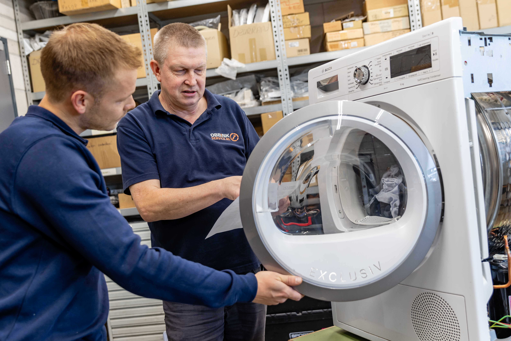
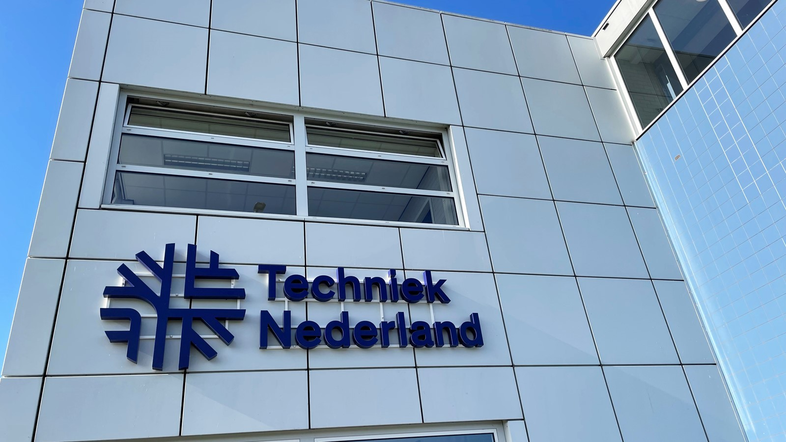

BUITENDIENST
Witgoedmonteur
Achterhoek
Werk zelfstandig bij klanten thuis aan diagnose, service en reparatie van witgoed en huishoudelijke apparatuur.
Bekijk vacature: Witgoedmonteur
WERKEN BIJ OBBINK SERVICE
Bij Obbink Service werk je met techniek die mensen iedere dag gebruiken. Van witgoed en elektronica tot onderhoud, reparatie, installatie en bezorging. Vanuit ons Service Center in Lichtenvoorde en bij klanten in de Achterhoek zorgen onze collega’s dat techniek blijft werken.
Techniek, service en vakmanschap sinds 1934
BUITENDIENST
Achterhoek
Werk zelfstandig bij klanten thuis aan diagnose, service en reparatie van witgoed en huishoudelijke apparatuur.
Bekijk vacature: WitgoedmonteurLEREN & WERKEN
Achterhoek
Leer het vak in de praktijk en ontwikkel je tot technisch servicemonteur onder begeleiding van ervaren collega’s.
Bekijk vacature: (Leerling) WitgoedmonteurONDERHOUD
Achterhoek
Werk op locatie aan preventief onderhoud en technische service en help storingen te voorkomen voordat ze problemen veroorzaken.
Bekijk vacature: Preventief OnderhoudsmonteurBINNENDIENST
Lichtenvoorde
Diagnose en reparatie vanuit ons eigen Service Center, met techniek, onderdelen en ervaren collega’s binnen handbereik.
Bekijk vacature: Monteur BinnendienstLOGISTIEK & SERVICE
Achterhoek
Bezorg apparatuur bij klanten, help met plaatsing en aansluiting en zorg dat iedere levering netjes wordt afgerond.
Bekijk vacature: Bezorger Witgoed & ElektronicaLeren • werken • doorgroeien
Wil je graag de techniek in, maar ben je nog geen ervaren witgoedmonteur? Bij Obbink Service kun je werken en leren combineren. Wij investeren in jouw ontwikkeling en leiden je samen met Techniek Nederland op tot witgoedmonteur.

Na je opleiding begint je ontwikkeling pas echt. Binnen Obbink Service doe je praktijkervaring op en groei je stap voor stap door naar een zelfstandige servicemonteur.

Een goede technische basis gecombineerd met dagelijkse praktijkervaring binnen Obbink Service.
STAGE · BBL · BIJBAAN
Ben je bezig met een technische opleiding en zoek je een stage, leerwerkplek of bijbaan waar je vanaf dag één echt mee mag doen?
Bij Obbink Service leer je het vak in de praktijk, samen met ervaren monteurs en praktijkopleiders. Van witgoed en elektronica tot installatie, onderhoud, logistiek en technische service: je werkt aan echte opdrachten en leert iedere dag iets nieuws.
Obbink is een erkend leerbedrijf en biedt mogelijkheden voor stagiairs, BBL-leerlingen en jongeren die in vakanties of op zaterdag praktische ervaring willen opdoen.
OPEN SOLLICITATIE
Heb je technische ervaring, ben je praktisch ingesteld of denk je dat je goed bij Obbink Service past? Ook zonder passende vacature maken we graag kennis met mensen die willen bijdragen aan onze technische serviceorganisatie.
Neem contact met ons op